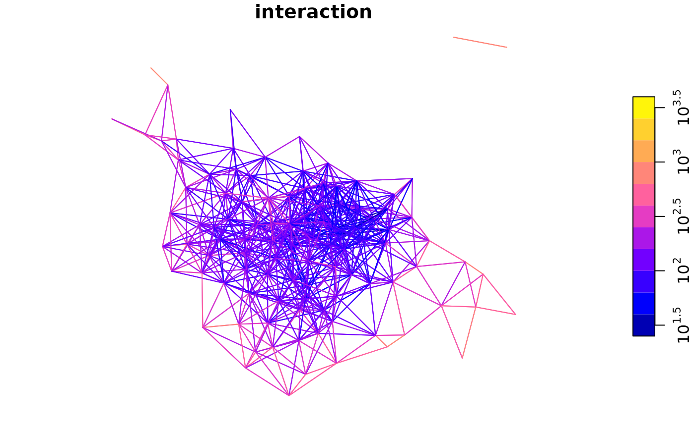
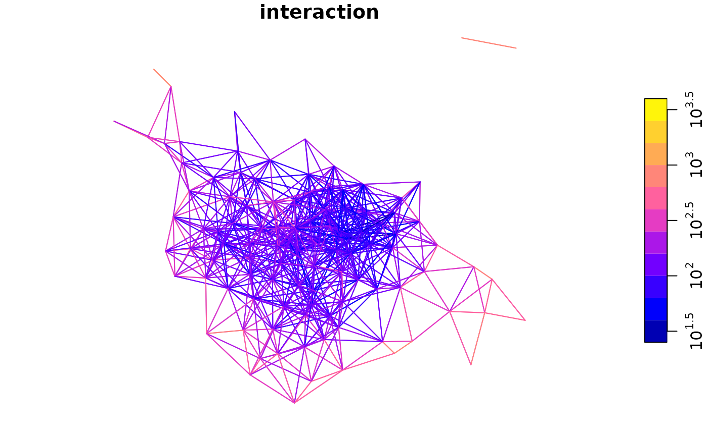

Executes a spatial interaction model based on an OD data frame and user-specified function
Usage
si_calculate(
od,
fun,
constraint_production,
constraint_attraction,
constraint_total,
output_col = "interaction",
...
)Arguments
- od
A data frame representing origin-destination data, e.g. as created by
si_to_od()- fun
A function that calculates the interaction (e.g. the number of trips) between each OD pair
- constraint_production
Character representing column in
od. This argument, when set, ensures that the outputs are 'production constrained': the total 'interaction' (e.g. n. trips) for all OD pairs is set such that the total for each zone of origin cannot go above this value.- constraint_attraction
Character representing column in
od. This argument, when set, ensures that the outputs are 'attraction constrained': the total 'interaction' (e.g. n. trips) for all OD pairs is set such that the sum of trips to destination is equal to the mean value per destination.- constraint_total
Single number representing the total interaction. This argument, when set, ensures that the sum of the interaction calculated will equal the value given.
- output_col
Character string containing the name of the new output column.
"interaction"by default.- ...
Arguments passed to
fun
Examples
od = si_to_od(si_zones, si_zones, max_dist = 4000)
#> Converting p to centroids
#> lon-lat points
fun_dd = function(d = "distance_euclidean", beta = 0.3) exp(-beta * d / 1000)
fun_dd(d = (1:5) * 1000)
#> [1] 0.7408182 0.5488116 0.4065697 0.3011942 0.2231302
od_dd = si_calculate(od, fun = fun_dd, d = distance_euclidean)
plot(od$distance_euclidean, od_dd$interaction)
fun = function(O, n, d, beta) O * n * exp(-beta * d / 1000)
od_output = si_calculate(od, fun = fun, beta = 0.3, O = origin_all,
n = destination_all, d = distance_euclidean)
head(od_output)
#> Simple feature collection with 6 features and 28 fields
#> Geometry type: LINESTRING
#> Dimension: XY
#> Bounding box: xmin: -1.704658 ymin: 53.90066 xmax: -1.346497 ymax: 53.92906
#> Geodetic CRS: WGS 84
#> O D distance_euclidean origin_geo_name origin_lad11cd
#> 1 E02002330 E02002330 0.000 Leeds 001 E08000035
#> 2 E02002330 E02002331 3579.804 Leeds 001 E08000035
#> 3 E02002331 E02002331 0.000 Leeds 002 E08000035
#> 4 E02002331 E02002330 3579.804 Leeds 002 E08000035
#> 5 E02002332 E02002332 0.000 Leeds 003 E08000035
#> 6 E02002332 E02002333 1582.213 Leeds 003 E08000035
#> origin_lad_name origin_all origin_bicycle origin_foot origin_car_driver
#> 1 Leeds 2809 52 300 2170
#> 2 Leeds 2809 52 300 2170
#> 3 Leeds 2387 53 469 1573
#> 4 Leeds 2387 53 469 1573
#> 5 Leeds 2471 39 341 1666
#> 6 Leeds 2471 39 341 1666
#> origin_car_passenger origin_motorbike origin_train_tube origin_bus
#> 1 138 10 36 89
#> 2 138 10 36 89
#> 3 132 16 10 126
#> 4 132 16 10 126
#> 5 147 19 75 166
#> 6 147 19 75 166
#> origin_taxi_other destination_geo_name destination_lad11cd
#> 1 14 Leeds 001 E08000035
#> 2 14 Leeds 002 E08000035
#> 3 8 Leeds 002 E08000035
#> 4 8 Leeds 001 E08000035
#> 5 18 Leeds 003 E08000035
#> 6 18 Leeds 004 E08000035
#> destination_lad_name destination_all destination_bicycle destination_foot
#> 1 Leeds 2809 52 300
#> 2 Leeds 2387 53 469
#> 3 Leeds 2387 53 469
#> 4 Leeds 2809 52 300
#> 5 Leeds 2471 39 341
#> 6 Leeds 3743 80 529
#> destination_car_driver destination_car_passenger destination_motorbike
#> 1 2170 138 10
#> 2 1573 132 16
#> 3 1573 132 16
#> 4 2170 138 10
#> 5 1666 147 19
#> 6 2340 193 26
#> destination_train_tube destination_bus destination_taxi_other
#> 1 36 89 14
#> 2 10 126 8
#> 3 10 126 8
#> 4 36 89 14
#> 5 75 166 18
#> 6 221 335 19
#> geometry interaction
#> 1 LINESTRING (-1.400108 53.92... 7890481
#> 2 LINESTRING (-1.400108 53.92... 2290854
#> 3 LINESTRING (-1.346497 53.92... 5697769
#> 4 LINESTRING (-1.346497 53.92... 2290854
#> 5 LINESTRING (-1.704658 53.91... 6105841
#> 6 LINESTRING (-1.704658 53.91... 5753720
plot(od$distance_euclidean, od_output$interaction)
od_pconst = si_calculate(od, fun = fun, beta = 0.3, O = origin_all,
n = destination_all, d = distance_euclidean, constraint_production = origin_all)
# Origin totals in OD data should equal origin totals in zone data
library(dplyr)
#>
#> Attaching package: ‘dplyr’
#> The following objects are masked from ‘package:stats’:
#>
#> filter, lag
#> The following objects are masked from ‘package:base’:
#>
#> intersect, setdiff, setequal, union
origin_totals_zones = od_pconst |>
group_by(geo_code = O) |>
summarise(all_od = sum(interaction)) |>
sf::st_drop_geometry()
zones_joined = left_join(si_zones, origin_totals_zones)
#> Joining with `by = join_by(geo_code)`
plot(zones_joined$all, zones_joined$all_od)
plot(od_pconst$distance_euclidean, od_pconst$interaction)
 plot(od_pconst["interaction"], logz = TRUE)

od_dd = si_calculate(od, fun = fun_dd, d = distance_euclidean, output_col = "res")
head(od_dd$res)
#> [1] 1.0000000 0.3416593 1.0000000 0.3416593 1.0000000 0.6220942
od_dd = si_calculate(od, fun = fun_dd, d = distance_euclidean, constraint_total = 10)
sum(od_dd$interaction)
#> [1] 10
plot(od_pconst["interaction"], logz = TRUE)

od_dd = si_calculate(od, fun = fun_dd, d = distance_euclidean, output_col = "res")
head(od_dd$res)
#> [1] 1.0000000 0.3416593 1.0000000 0.3416593 1.0000000 0.6220942
od_dd = si_calculate(od, fun = fun_dd, d = distance_euclidean, constraint_total = 10)
sum(od_dd$interaction)
#> [1] 10